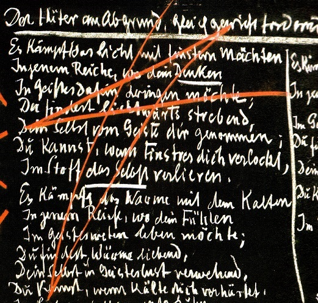

Volume Three, Lesson Four (Recapitulation)
From stenographic notes in German unrevised by the author.
Translated by Frank Thomas Smith
Dornach, September 13, 1924
My dear sisters and brothers,
It is not possible every time to give the corresponding introduction about the task and meaning of the School and about membership in the School. Therefore, although a large number of new members are again present, I will not give the introduction, but will continue from where we left off last time, and I must remind the members who are to give the previous mantras to the newcomers in the usual way, that they must to do so under the conditions which I will mention at the end of this lesson. They should also describe the conditions for acceptance in this School.
We shall begin by again letting our souls hear the words which are spoken by all the Beings and processes of the world to the human being who wishes to be worthy of the name, and who has an unbiased sense that in them lies the exhortation to seek true self-knowledge, a self-knowledge that leads to knowledge of the world. And we are exhorted from all sides, from all the Beings of all the kingdoms of nature and all the kingdoms of spirit to this self-knowledge in the true sense of the word, which is the path to world-knowledge. Thus all the Beings of nature and of the spirit exhorted humans in the past, exhort them in the present, and will exhort humans in the future. These exhorting words that urge the soul of man, if he wants to hear them, from all sides, from the east and the west, from the south and the north, from above and below, may also today begin to describe what this Michael-School should mean:
O man, know thyself!
So resounds the Cosmic-Word.
You hear it strong in soul,
You feel it firm in spirit.
Who speaks with such cosmic might?
Who speaks with such depth of heart?
Does it work through distant radiant space
Into your senses' sense of being?
Does it ring through weaving waves of time
Into your life's evolving stream?
It's you yourself who,
In feeling space, in experiencing time,
Create the Word, feeling foreign
In the soulless void of space
Because you lose the force of thought
In time's destructive flow.
We have seen how the seeker of knowledge approaches the Guardian of the Threshold, how after the seeker of knowledge has stood there shattered by the impression of the three beasts, which show the true nature of his present willing, feeling and thinking as they appear before the visage of the spiritual world how he is gradually lifted up by the Guardian of the Threshold.
And we have already heard what the Guardian of the Threshold speaks to the one he wants to lift up, how he points, on the one hand, above, where a battle is taking place between the light and the dark powers in the realm from which the force of our thinking streams into our humanity. The Guardian of the Threshold thinks that we need this image. We need if we wish to feel in the right way, by seeking knowledge, the origins of our thinking, the force of our thinking in our humanity to look up to that realm from which our thinking comes, where however a terrible battle rages between the powers of light, the light which wants to guide thinking along the right track, and the powers of darkness, who want to divert thinking from the right track and lead it along paths of aberration. Our thinking is rooted above. We must know it to be so rooted if we want to be knowledgeable in the battle between light and darkness.
And then, if we understand what striving towards the light is, we find that we must remain erect. And we must know that we are involved with the battle between light and darkness: The light wants to bring us to a state of spiritual powerlessness, so to speak; the darkness wants to make us lose ourselves in matter. But we must seek the state of equilibrium between them not letting ourselves be overtaken by light, nor letting the darkness transform us into matter, but to stand firmly in our selfhood and find the equilibrium for our thinking between light and darkness.
And then when we consider our feeling, we must see in that realm which reaches out into the horizontal, into the cosmic distances how we are involved in the battle between the warmth of soul and the coldness of soul.
In the warmth of soul are working all the luciferic powers, the powers of beauty, the powers of brightness, the powers who want to give us divine forces without our own effort. We would be unfree and lacking independence if they were to catch us.
But on the other side are the powers of cold, the coldness of soul that is permeated by ahrimanic Beings who would cause us to lose our Selves in the cold. We must find the equilibrium between that spiritual blissfulness into which the forces of warmth, the forces of heat, of fire wish to bring us, and that region into which, with enormous all-embracing intellectuality, the ahrimanic powers wish to seduce us with coldness. We must maintain our equilibrium between both of them in order to find the right sense of feeling for knowledge.
Then, when we observe our willing, we must look below. There is the realm of the earth and of gravity from which the force of our will comes for our earthly life. For the earth does not only contain the force of gravity; spiritually, it also contains the force of human will. Once again we stand face to face with two powers the powers of life and the powers of death. We can succumb with our willing to the powers of life. Then it is as though the powers of life want to seize us, use our will forces in the cosmos. We must hold our Self erect, and find the equilibrium between these powers of life and the powers of death, the latter wanting to confine us in a constricted space in order to eternally interweave our will with materiality.
The Guardian of the Threshold exhorts us at this point to maintain ourselves in equilibrium between light and darkness, in equilibrium between warmth and cold, in equilibrium between life and death. For we may not only belong to the power of the light. In light alone we would be benumbed, dazzled. We may not devote ourselves to the darkness alone, for then we would lose ourselves in the substance of darkness. We must strive for what is striven for in all the world.
Wherever you look, my sisters and brothers, light and darkness intermingle. Look at your hair. The light plants it in your head. But it must be permeated with darkness, otherwise your hair would be entirely rays of light. Look at your whole body: it is woven of light. But it could have no solidity if darkness were not also interwoven in it. Look at any object, my sisters and brothers! Blossoming plants: they are created from light; but the powers of darkness must press up from the soil so that from light and darkness what the plants represent in their solid consistency the nature of plants on earth can be found.
Just as in all of nature a balance between light and darkness is found, so must the human being strive psychically for it in the spiritual world if he wants to be a real seeker after knowledge. And it is also the case for equilibrium between warmth and cold, and for equilibrium between life and death.
So there we are at the yawning abyss of being, still looking, as behind us the gleaming colorful kingdoms of nature, to which we belong with our senses, become darker and darker as it becomes clear to us that our real being is not revealed by all of wondrous sensory nature, nor is it what leads us to self-knowledge. In front of us, like a black wall, is still the border of the dark realm, into which we must go so that there will be light within by means of the force which we ourselves bring. We are still standing at the yawning abyss of being, but have become bolder in confidence that through the Guardian's admonitions we will grow wings to cross the abyss in order to enter the darkness, and there is light in the darkness.
This is one of the last of the Guardian's admonitions:
The light does battle with powers of darkness
In that realm, where your thinking
In spirit-being longs to enter.
You find, striving lightward,
Your Self, taken from you by spirit;
You can, when darkness entices you,
The Self in matter lose.
The warmth does battle with the cold
In that realm, where your feeling would
In spirit-interweaving live.
You find, loving warmth, your Self
In spirit-longing blown away;
You can, if cold does harden you,
The Self in sorrow grind to dust.
Thus life does battle with death
In that realm where your will
Would act with spiritual creation.
You find, holding on to life,
Your Self vanishing in spirit's power;
If death's power binds you fast,
You may constrict the Self to nothing.
[The mantra is written on the blackboard.]
The Guardian at the abyss exacting equilibrium:
The light does battle with powers of darkness
In that realm where your thinking
In spirit-being longs to enter.
You find, striving lightward,
Your Self, taken from you by spirit;
You can, when darkness entices you,
The Self in matter lose.
The warmth does battle with the cold
In that realm, where your feeling would
In spirit-interweaving live.
You find, loving warmth, your Self
In spirit-longing blown away;
You can, if cold does harden you,
The Self in sorrow grind to dust.
Thus life does battle with death
In that realm, where your will
Would act with spiritual creation.
You find, holding on to life,
Your Self vanishing in spirit's power;
If death's power binds you fast,
You may constrict the Self to nothing.
You will find, my dear sisters and brothers, that if you devote yourselves to these mantric worlds with the right conviction and with peace in your souls, with a feeling of sacrificial devotion to the spirit, you will find that what instills equilibrium in the soul is present in the words themselves.
As seekers after knowledge, we stand now before the Guardian of the Threshold at the yawning abyss of being. Next the Guardian of the Threshold teaches us how we, in wanting to choose the right direction between light and darkness, warmth and cold, life and death, can find our own Self.
In no other way can we do this, my dear sisters and brothers, than by pondering the following: In order to achieve true knowledge it is necessary that we become one with the world, that we have a feeling respecting the world as a finger would if it could feel for itself, feel itself to be a part of the entire human body. If the finger could feel for itself it would say: I am only a finger as long as I am a part of the human body, when the human body's blood is my blood, when the human body's pulsation is my pulsation. If I am cut off, I cease being a finger. The finger loses its meaning when separated from the organism to which it belongs and only as part of which it can be a finger.
The human being must learn to feel in this way in respect to the entire world. We are members of the spirit-soul organism of the entire world, and only seem to be separated from the spirit-soul organism of the world. We must connect in the right way to the spirit-soul organism of the world and must know that around us the elements earth, water, air, fire are spread, and we must learn to feel that our bodily nature for it is composed of these elements is at one with these elements.
The Guardian of the Threshold teaches us that we should do this, and how. Just consider exactly what learning streams in those mantric verses the Guardian of the Threshold has given us, which have brought us to the abyss of being.
My dear sisters and brothers, think that you tentatively touch some object with your finger. You know that the object is there where you touch it. You touch an object. You have the feeling of being at one with this object, because at the moment you touch it the sense of touch is what makes a finger, or whatever you touch it with, at one with the object. Now think that you as a whole are like a finger, a touching finger. You are standing on the earth, on the element earth. You are standing here because the earth's main property is the element of gravity. You are touching the earth with the soles of your feet, regardless of whether you are standing on the floor of a room or outside on the bare earth. The point is that you feel, in standing, that you are touching the earth's gravitational element. You could be standing above on a mountain, or on a tower: you sense just as you sense at the tip of your finger the hard and the soft, the warm and the cold in the process of touching you sense the unity in your soles of your feet, where you sense the weight of gravity.
The Guardian of the Threshold says this when he admonishes us in the following way:
O man, touch within your body's entire being
How earthly forces support you in existence.
That earthly forces are our support, that the earthly element supports us so we don't sink down, is what the Guardian of the Threshold is telling us now.
Then he leads us further, so that we not only feel that we are like a whole finger, but that we also feel what is within the finger: it is the element of water, of fluid. For everything which is in the human being something also known by physical science is born from the fluid element. Solid is isolated from fluid, as ice is from water. We must rise to the sensation of the element of water. Out in the world everything is of a fluid nature. Our own formative forces are formed in us by the fluid element. Just as we feel the earth as our support, we also feel, in that we feel our organs, that we are formed as human beings out of the fluid element. It creates the formative forces for us. Our lungs and our livers are solidly formed, but they solidify from out of the fluid element, from out of the element of water. Just as we feel the earth to be our support, we also feel, in that we feel our organs, that the water element forms us as human beings. The water forces are our sculptors; the earth is our support. Therefore the Guardian of the Threshold admonishes us:
O man, experience in the circle of your touch
(We can touch everywhere, but when we feel the touching itself...)
O man, experience in the circle of your touch,
How water-beings are your being's sculptors.
Now the Guardian of the Threshold continues to admonish us. He teaches us how we can also unite with the powers of air. We breathe in the air. We know that if we breathe in the air in the wrong way we feel it; so it has to do with our feelings. We have feelings that make us fearful, that breech the coherence of our existence. Just as the water element shapes us, so do does the air element care for us. The Guardian of the Threshold admonishes us:
O man, now feel in all your life's interweaving
How powers of air are your caregivers in existence.
Now the Guardian leads us farther on to the warmth element. We feel ourselves united internally with warmth. We feel the earth outside of us as support. We know little about how the water forces shape us, during growth, for example; that stays in the subconscious. The powers of air thrust themselves in only when they are abnormal, when they don't work normally. But we feel united with warmth when we have the right amount in us. Our souls and our whole being become warm when we feel warmth from without. We stiffen when we must experience cold from without. Warmth and cold are at one with us in a completely different way in the elemental world. There they are neither merely supporters, nor our sculptors, nor our caregivers they are our true helpers in physical existence. The Guardian of the Threshold admonishes us:
O man, think in all the streams of feeling,
How fire-powers are helpers in your existence.
If we heed all that is entailed in these demands, we will find the path to conscious unification of our corporeality with the elements. And in different degrees our corporeality is one with the elements. At first the earth-element supports us in an exterior, mechanical way. The earth-element is support for us; it is mechanical and exterior. It will become more inward, but still consists of formations which do not reach the soul; water-beings form us, are our sculptors. When we become one with the air-elements, we rise to the level of morality. The air-element is no longer a mere exterior designer, it is our caregiver. And our feelings are of anxiety if we do not breathe in the right way. The powers of air are caregivers; warmth and cold are helpers, enabling us to be earthly beings. They are fire-powers, now wholly at the moral level.
The summation of the Guardian of the Threshold's admonitions with respect to the escalation of the elements:
O man, observe yourself in the elemental kingdom.
[The mantra is written on the blackboard.]
The Guardian's teaching:
O man, touch within your body's entire being
How earthly forces support you in existence.
O man, experience in all the circle of your touch,
How water-beings are your being's sculptors.
O man, now feel in all your life's interweaving
How powers of air are your caregivers in existence.
O man, think in all the streams of feeling,
How fire-powers are helpers in your existence.
We have here the escalation [the words are underlined on the blackboard.]
support, sculptors, caregivers, helpers.
We also have another escalation. For in a mantric verse every word is in the right place, and there is no word there that only serves to fill an empty space. Everything coincides with its inner meaning with which we should unite ourselves in meditation on the mantric verse. We have an escalation [underlined on the blackboard] touch, experience, feel, think. It is a special escalation. So in meditation we must also sense the inner, meaningful structure of such a mantric verse.
Once the Guardian has said this, he sums it up again in one line:
[It is written on the blackboard:]
O man, observe yourself in the elemental kingdom.
Thus the Guardian leads us to an inner experience of the verses, through which we can unite our corporeality with the elements to which it belongs.
Then he guides us further on to the soul. Here he doesn't point us to the elements earth, water, air, fire; here he points us to the planets. He points out to us how we should feel about what mutually draws the planets orbits around the earth, how one planet or another draws the orbit. The orbits have a relationship and speak to each other when the human being rises in his soul to this secret of the universe-pointing, planetary powers. Then he lives with his soul in the spiritual kingdom of the cosmos, just as he had previously lived with his body in the elemental kingdom. We can only psychically feel to be at one with the cosmos if we bring ourselves to live into the kingdom of the planets and their orbits. The Guardian of the Threshold tells us this with these words:
O man, let rule within your depths of soul
The universe-pointing planetary powers.
[It is written on the blackboard.]
O man, let rule within your depths of soul
The universe-pointing planetary powers.
Again the Guardian of the Threshold sums up the direction-giving forces in these two lines for how the soul can feel to be at one with the secrets of the planets:
[written on the blackboard]
O man, become yourself...
(which means: make yourself existent)
...through the cosmic orbits.
The cosmic orbits of the various planets are drawn together into one cosmic orbit. We have thereby felt body and soul to be at one with the cosmos: the body with the earthly elements, the soul with the planets.
If we want the spirit to feel at one with the universe, we can neither look to the elements nor to the secrets of the planets, rather must we look to the stars. For there is the power with which we must feel our spirit to be at one with in the distant universe, if we wish to feel ourselves to be members of this universe in the true sense. There the cosmos begins to intone the music of the spheres. Therefore the Guardian of the Threshold admonishes us:
O man, preserve within your spirit's creation
The planets' words proclaimed in heaven.
[It is written on the blackboard.]
O man, preserve within your spirit's creation
The planets' words proclaimed in heaven.
Again the Guardian of the Threshold summarizes the requirement in one line:
O man, create yourself through heaven's wisdom.
Every moment our spiritual existence is a creation of our Self.
[It is written on the blackboard.]
At every moment our spiritual existence is a creation of our Self.
If we sense and feel this in the right way, we are internalized by the Guardian of the Threshold. We recall how the words of self-knowledge were intoned from all creation still in an abstract form, how they rang out to us from all sides of natural and spiritual existence. But now the phrase: O man, know thyself, is clarified in all its parts. It now consists of one, two, three, four, five, six, seven, eight, nine parts.
O man, know thyself should be seen as nine rays of light, so to speak. Then it will be filled with what our meditation needs.
That is how we should feel. And, in a certain sense, we should pledge to the Guardian of the Threshold that we will adhere to his admonition:
O man, touch within your body's entire being
How earthly forces support you in existence.
O man, experience in all the circle of your touch,
How water-beings are your being's sculptors.
O man, now feel in all your life's interweaving
How powers of air are your caregivers in existence.
O man, think in all the streams of feeling,
How fire-powers are helpers in your existence.
O man, observe yourself in the elemental kingdom.
O man, let rule within your depths of soul
The universe-pointing planetary powers.
O man, become yourself through the cosmic orbits.
O man, preserve within your spirit's creation
The planets' words proclaimed in heaven.
O man, create yourself through heaven's wisdom.
We make a kind of pledge to the Guardian of the Threshold that we will always adhere to his admonitions, letting them run through our soul as mantras.
Again and again we look back, and at every step we feel bound to remember what is happening on this side of the threshold. And on this side of the threshold every stone and every plant, every tree, every cloud, every spring, every rock, every lightning, every thunder has called to us:
O man, know thyself!
So resounds the Cosmic-Word.
You hear it strong in soul,
You feel it firm in spirit.
Who speaks with such cosmic might?
Who speaks with such depth of heart?
Does it work through distant radiant space
Into your senses' sense of being?
Does it ring through weaving waves of time
Into your life's evolving stream?
It's you yourself who,
In feeling space, in experiencing time,
Create the Word, feeling foreign
In the soulless void of space
Because you lose the force of thought
In time's destructive flow.
Thus when these words of the Guardian of the threshold ring out with full spiritual force in this room words which he as the serving member of Michael's power, the reigning power of our time when these words ring out we can be certain, because this esoteric school has been founded by Michael's might itself, that Michael is present with his force, with his spirit, with his love, that Michael is psycho-spiritually present among us.
And that can be confirmed here where responsibility is felt by the leadership of the School towards the power of Michael that nothing else streams through this School than what is present in the holy will of Michael. It may be confirmed by Michael's sign and Michael's seal; this Michael-Sign [in red]:
and the Michael-seal, which confirms that Michael-Power enters into the true Rosicrucian training and is thus conjoined with what is being taught in the Michael School with Michael's seal, which the Rosicrucian endowment seals in the Rosicrucian verse accompanied by the seal-signs:
and that means:
I revere the Father
[first seal gesture]
I love the Son
[middle seal gesture]
I unite with the Spirit
[third seal gesture]
I revere the Father: in saying Ex deo nascimur, this feeling passes through our soul;
I love the Son: in saying In Cristo morimur, this feeling passes silently through our soul;
I unite with the Spirit: is silently felt when saying Per spiritum sanctum reviviscimus.
The mantric verses come to you, my sisters and brothers, with the sign and seal of Michael:
[Michael Sign]
[Together with the seal gestures is spoken:]
Ex deo nascimur
In Cristo morimur
Per spiritum sanctum reviviscimus.
***
Only those who have been accepted as members of this School may possess the verses which are imparted here. Those who cannot be present during a lesson when verses have been given, may receive them from those who have received them in the School itself. However, in order to receive the verses, permission must first be granted by either Dr. Wegman or by me. The request to Dr. Wegman or to me can only be made by the one who wants to give the verses to another. Therefore, the one who wants to receive them should not request them; it would serve no purpose. He can go to someone and ask that he be given them; but the one who gives them must ask permission in every case. This is not an administrative rule, but an occult arrangement which must be followed, because the handing over must begin with this real act.
The request may not be done in writing it has happened, so I must be clear about it but must be done orally, except when exceptional circumstances make an oral understanding impossible. Least of all in esoteric matters should even the hint of bureaucracy exist. Everything must be alive, just as it should be in the Anthroposophical Society.
Furthermore, whoever writes down more than the verses is obliged to keep what has been written for only one week and then to burn it. For it is not good that they somehow remain longer. They can go in all possible directions. Esoteric material must be handled in this way; it is not an arbitrary rule. In esoterica everything is determined from true occult foundations. And if esoteric mantric verses are revealed in an incorrect way by the members who have the right because they either received the verses here during a lesson or by the correct way as described if they are received by others in an incorrect way, they lose all their spiritual force. That is an occult law. And in the spiritual world there are laws which may not be ignored without punishment. So this is not an arbitrary rule, but one which obeys an occult law.
Now for some announcements. Tomorrow at 9:30 a.m. the course about Pastoral Medicine will continue, then at 12 noon the course for Speech Formation and drama; in the afternoon at 3:30 p.m. the course for Theologians. At 5 p.m. there will be an eurythmy performance. The next Esoteric Lesson, in which the Michael teachings will be rounded out, will take place on Monday at 8:30.